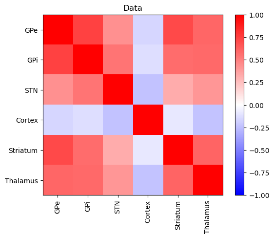
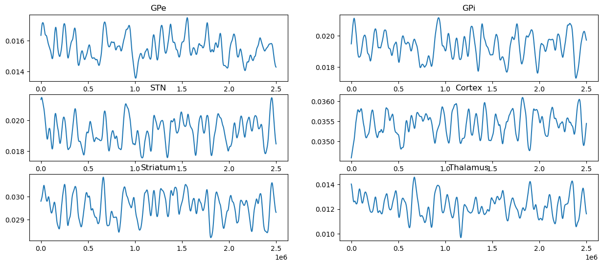
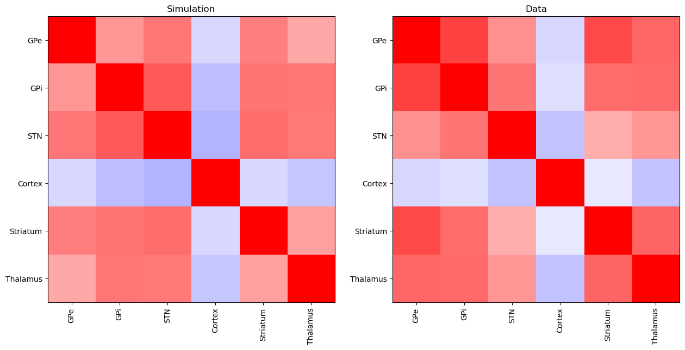
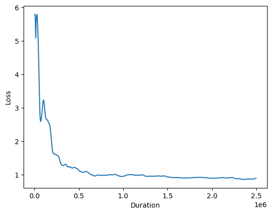

#!pip install ANNarchyBOLD monitoring using a basal ganglia model
Download the Jupyter notebook: BoldParkinson.ipynb or run it directly on colab.
Partial reproduction of:
Maith, O., Escudero, F. V., Dinkelbach, H. Ü., Baladron, J., Horn, A., Irmen, F., et al.
A computational model-based analysis of basal ganglia pathway changes in Parkinson’s disease inferred from resting-state fMRI.
European Journal of Neuroscience. doi:10.1111/ejn.14868
import numpy as np
import json
import matplotlib.pyplot as plt
from ANNarchy import *
from ANNarchy.extensions.bold import BoldMonitor, BoldModel
from ANNarchy.extensions.bold.NormProjection import NormProjection
clear()ANNarchy 4.7 (4.7.2.5) on darwin (posix).Data
Below is the correlation matrix of the fMRI resting states of six areas :
- GPe
- GPI
- STN
- Cortex
- Striatum
- Thalamus
for a given patient. We want to fit some unknown hyperparameters of a basal ganglia model to this particular data.
corr_mat_experiment = [
[ 1. , 0.7404208 , 0.43226027 ,-0.1593407 , 0.71059084 , 0.5998113 ],
[ 0.7404208 , 1. , 0.5438787 ,-0.12846166 , 0.5740793 , 0.58351475],
[ 0.43226027 , 0.5438787 , 1. ,-0.23731637 , 0.3270468 , 0.4103379 ],
[-0.1593407 ,-0.12846166 ,-0.23731637 , 1. ,-0.08617731 ,-0.23299724],
[ 0.71059084 , 0.5740793 , 0.3270468 ,-0.08617731 , 1. , 0.6047172 ],
[ 0.5998113 , 0.58351475 , 0.4103379 ,-0.23299724 , 0.6047172 , 1. ],
]
plt.figure()
plt.imshow(corr_mat_experiment, vmin=-1, vmax=1, cmap="bwr")
plt.title("Data")
plt.xticks([0, 1, 2, 3, 4, 5], labels=["GPe", "GPi", "STN", "Cortex", "Striatum", "Thalamus"], rotation='vertical')
plt.yticks([0, 1, 2, 3, 4, 5], labels=["GPe", "GPi", "STN", "Cortex", "Striatum", "Thalamus"])
plt.colorbar()
plt.show()
Neuro-computational model
Let’s first define the neuron models used in the network, as variations of the Izhikevich neuron:
Hybrid_neuron = Neuron(
parameters="""
a = 0.0
b = 0.0
c = 0.0
d = 0.0
n0 = 140.
n1 = 5.0
n2 = 0.04
I = 0.0
tau_ampa = 10
tau_gaba = 10
E_ampa = 0.0
E_gaba = -90.0
tau_syn = 1.0
SteadyStateNoise = 0.0
baseline = 0.0
tau_noise=200.
""",
equations="""
dg_ampa/dt = -g_ampa/tau_ampa : init = 0
dg_gaba/dt = -g_gaba/tau_gaba : init = 0
dslowNoise/dt = (-slowNoise+SteadyStateNoise)/tau_noise : init = 0
dv/dt = n2*v*v+n1*v+n0 - u + I - g_ampa*(v-E_ampa) - g_gaba*(v-E_gaba) + slowNoise + baseline : init = -70.
du/dt = a*(b*(v)-u) : init = -18.55
tau_syn*dsyn/dt = -syn
""",
spike="""
v>=30
""",
reset="""
v = c
u = u+d
""",
refractory=10.0,
)
Striatum_neuron = Neuron(
parameters="""
a = 0.05
b = -20.0
c = -55.0
d = 377
n0 = 61.65119
n1 = 2.594639
n2 = 0.022799
I = 0.0
tau_ampa = 10
tau_gaba = 10
E_ampa = 0.0
E_gaba = -90.0
Vr = -80.
C = 50.
tau_syn = 1.0
SteadyStateNoise = 0.0
tau_noise=200.
baseline=0.0
""",
equations="""
dg_ampa/dt = -g_ampa/tau_ampa : init = 0
dg_gaba/dt = -g_gaba/tau_gaba : init = 0
dslowNoise/dt = (-slowNoise+SteadyStateNoise)/tau_noise : init = 0
dv/dt = n2*v*v+n1*v+n0 - u/C + I/C - g_ampa*(v-E_ampa) - g_gaba*(v-E_gaba) + slowNoise + baseline : init = -70.
du/dt = a*(b*(v-Vr)-u) : init = -18.55
tau_syn*dsyn/dt = -syn
""",
spike="""
v>=40
""",
reset="""
v = c
u = u+d
""",
refractory=10.0,
)Here are some fixed parameters for the simulation:
# Some global definitions
timestep = 0.1
seedVal = 10
setup(dt=timestep, suppress_warnings=True, seed=seedVal)
rng = np.random.default_rng(seed=seedVal)
# General parameters
population_size = 200
numberOfNeuronsCortex = 600
# synaptic activity noise (max-)amplitude
noiseSYAC = 0.05 # 0.15
# how often changes the noise
noiseFrequency = 1000.0 # every x ms
# times in ms
initial_simulate = 15000.0
simulationduration = 250000.0
# baselines
Cortex_baseline = 50
CortexInhib_baseline = 0
SD1_baseline = 0
SD2_baseline = 0
GPi_baseline = 30
GPe_baseline = 12
STN_baseline = 3
Thalamus_baseline = 3.5
# noise in population
Cortex_noise_mean = 0
Cortex_noise_sd = 10
SD1_noise_mean = 0
SD1_noise_sd = 2
SD2_noise_mean = 0
SD2_noise_sd = 2
GPi_noise_mean = 0
GPi_noise_sd = 3
GPe_noise_mean = 0
GPe_noise_sd = 5
STN_noise_mean = 0
STN_noise_sd = 2
Thalamus_noise_mean = 0
Thalamus_noise_sd = 2
# noise change over time
Cortex_noise_delta = 5
SD1_noise_delta = 0
SD2_noise_delta = 0
GPi_noise_delta = 0
GPe_noise_delta = 0
STN_noise_delta = 0
Thalamus_noise_delta = 0and here are the parameters that were found as a result of the hyperparameter optimization for this data sample:
fitted_con_params = {
"D1GPi_probs": 0.17029162198305128,
"D2GPe_probs": 0.4074640914797783,
"GPeSTN_probs": 0.18478520214557648,
"STNGPe_probs": 0.4119542151689529,
"STNGPi_probs": 0.2458414003252983,
"GPeGPi_probs": 0.32317305132746693,
"GPeGPe_probs": 0.3238955348730087,
"GPiGPi_probs": 0.31747561842203137,
"GPiThal_probs": 0.25937364250421524,
"ThalSD2_probs": 0.1753483198583126,
"ThalSD1_probs": 0.12791343107819556,
"SD1SD1_probs": 0.44881010577082636,
"SD2SD2_probs": 0.20492168664932248,
"CSD1_probs": 0.19523878321051596,
"CSD2_probs": 0.10281952470540998,
"CSTN_probs": 0.16828824281692503,
"V1Inh_probs": 0.41263159513473513,
"InhV1_probs": 0.21300644502043722,
"InhInh_probs": 0.34024816900491717,
"D1GPi_weights": 0.009132171887904406,
"D2GPe_weights": 0.007663531694561243,
"GPeSTN_weights": 0.006760342903435231,
"STNGPe_weights": 0.010754598900675774,
"STNGPi_weights": 0.013566167578101158,
"GPeGPi_weights": 0.006238304376602173,
"GPeGPe_weights": 0.007731672264635564,
"GPiGPi_weights": 0.011985597293823957,
"GPiThal_weights": 0.006650131419301033,
"ThalSD2_weights": 0.006984027139842511,
"ThalSD1_weights": 0.012284493483603,
"SD1SD1_weights": 0.008113504592329264,
"SD2SD2_weights": 0.013962633926421403,
"CSD1_weights": 0.013000000000000001,
"CSD2_weights": 0.010670950431376695,
"CSTN_weights": 0.01283267229795456,
"V1Inh_weights": 0.00956317337229848,
"InhV1_weights": 0.012076521553099155,
"InhInh_weights": 0.009441683050245047
}We create the populations:
# Cortex
popV1 = Population(geometry=numberOfNeuronsCortex, neuron=Hybrid_neuron, name="V1")
popInhibit = Population(geometry=numberOfNeuronsCortex / 4, neuron=Hybrid_neuron)
popV1.a = 0.02
popV1.b = 0.2
popV1.c = -72
popV1.d = 6
popV1.I = 0.0
popV1.v = -72
popV1.u = -14
popV1.baseline = Cortex_baseline
popInhibit.a = 0.02
popInhibit.b = 0.2
popInhibit.c = -72
popInhibit.d = 6
popInhibit.I = 0.0
popInhibit.v = -72
popInhibit.u = -14
popInhibit.baseline = CortexInhib_baseline
# other layers
SD1 = Population(population_size, Striatum_neuron, name="SD1")
SD2 = Population(population_size, Striatum_neuron, name="SD2")
GPi = Population(population_size, Hybrid_neuron, name="GPi")
GPe = Population(population_size, Hybrid_neuron, name="GPe")
STN = Population(population_size, Hybrid_neuron, name="STN")
Thalamus = Population(population_size, Hybrid_neuron, name="Thalamus")
# GPi parameters
GPi.a = 0.005
GPi.b = 0.585
GPi.c = -65.0
GPi.d = 4.0
GPi.I = 0.0 # 10
GPi.baseline = GPi_baseline # 2.5
# GPe parameters
GPe.a = 0.005
GPe.b = 0.585
GPe.c = -65
GPe.d = 4
GPe.I = 0.0
GPe.baseline = GPe_baseline # 1.2
# STN parameters
STN.a = 0.005
STN.b = 0.265
STN.c = -65
STN.d = 2.0
STN.I = 0.0
STN.baseline = STN_baseline
# Thalamus parameters
Thalamus.a = 0.02
Thalamus.b = 0.25
Thalamus.c = -65
Thalamus.d = 0.05
Thalamus.I = 0.0
Thalamus.baseline = Thalamus_baselineand the projections.
Note: We use NormProjection instead of Projection for backwards compatibility…
projV1_Inhib = NormProjection(
pre=popV1,
post=popInhibit,
target="ampa",
name="V1Inh",
variable="syn",
).connect_fixed_probability(
probability=fitted_con_params["V1Inh_probs"],
weights=fitted_con_params["V1Inh_weights"],
force_multiple_weights=True,
)
projInhib_V1 = NormProjection(
pre=popInhibit,
post=popV1,
target="gaba",
variable="syn",
name="InhV1",
).connect_fixed_probability(
probability=fitted_con_params["InhV1_probs"],
weights=fitted_con_params["InhV1_weights"],
force_multiple_weights=True,
)
projInhib_Lat = NormProjection(
pre=popInhibit,
post=popInhibit,
target="gaba",
variable="syn",
name="InhInh",
).connect_fixed_probability(
probability=fitted_con_params["InhInh_probs"],
weights=fitted_con_params["InhInh_weights"],
force_multiple_weights=True,
)
D1GPi = NormProjection(
pre=SD1,
post=GPi,
target="gaba",
variable="syn",
name="D1GPi",
).connect_fixed_probability(
probability=fitted_con_params["D1GPi_probs"],
weights=fitted_con_params["D1GPi_weights"],
force_multiple_weights=True,
)
D2GPe = NormProjection(
pre=SD2,
post=GPe,
target="gaba",
variable="syn",
name="D2GPe",
).connect_fixed_probability(
probability=fitted_con_params["D2GPe_probs"],
weights=fitted_con_params["D2GPe_weights"],
force_multiple_weights=True,
)
GPeSTN = NormProjection(
pre=GPe,
post=STN,
target="gaba",
variable="syn",
name="GPeSTN",
).connect_fixed_probability(
probability=fitted_con_params["GPeSTN_probs"],
weights=fitted_con_params["GPeSTN_weights"],
force_multiple_weights=True,
)
STNGPe = NormProjection(
pre=STN,
post=GPe,
target="ampa",
variable="syn",
name="STNGPe",
).connect_fixed_probability(
probability=fitted_con_params["STNGPe_probs"],
weights=fitted_con_params["STNGPe_weights"],
force_multiple_weights=True,
)
STNGPi = NormProjection(
pre=STN,
post=GPi,
target="ampa",
variable="syn",
name="STNGPi",
).connect_fixed_probability(
probability=fitted_con_params["STNGPi_probs"],
weights=fitted_con_params["STNGPi_weights"],
force_multiple_weights=True,
)
GPeGPi = NormProjection(
pre=GPe,
post=GPi,
target="gaba",
variable="syn",
name="GPeGPi",
).connect_fixed_probability(
probability=fitted_con_params["GPeGPi_probs"],
weights=fitted_con_params["GPeGPi_weights"],
force_multiple_weights=True,
)
GPeGPe = NormProjection(
pre=GPe,
post=GPe,
target="gaba",
variable="syn",
name="GPeGPe",
).connect_fixed_probability(
probability=fitted_con_params["GPeGPe_probs"],
weights=fitted_con_params["GPeGPe_weights"],
force_multiple_weights=True,
)
GPiGPi = NormProjection(
pre=GPi,
post=GPi,
target="gaba",
variable="syn",
name="GPiGPi",
).connect_fixed_probability(
probability=fitted_con_params["GPiGPi_probs"],
weights=fitted_con_params["GPiGPi_weights"],
force_multiple_weights=True,
)
GPiThal = NormProjection(
pre=GPi,
post=Thalamus,
target="gaba",
variable="syn",
name="GPiThal",
).connect_fixed_probability(
probability=fitted_con_params["GPiThal_probs"],
weights=fitted_con_params["GPiThal_weights"],
force_multiple_weights=True,
)
ThalSD2 = NormProjection(
pre=Thalamus,
post=SD2,
target="ampa",
variable="syn",
name="ThalSD2",
).connect_fixed_probability(
probability=fitted_con_params["ThalSD2_probs"],
weights=fitted_con_params["ThalSD2_weights"],
force_multiple_weights=True,
)
ThalSD1 = NormProjection(
pre=Thalamus,
post=SD1,
target="ampa",
variable="syn",
name="ThalSD1",
).connect_fixed_probability(
probability=fitted_con_params["ThalSD1_probs"],
weights=fitted_con_params["ThalSD1_weights"],
force_multiple_weights=True,
)
SD1SD1 = NormProjection(
pre=SD1,
post=SD1,
target="gaba",
variable="syn",
name="SD1SD1",
).connect_fixed_probability(
probability=fitted_con_params["SD1SD1_probs"],
weights=fitted_con_params["SD1SD1_weights"],
force_multiple_weights=True,
)
SD2SD2 = NormProjection(
pre=SD2,
post=SD2,
target="gaba",
variable="syn",
name="SD2SD2",
).connect_fixed_probability(
probability=fitted_con_params["SD2SD2_probs"],
weights=fitted_con_params["SD2SD2_weights"],
force_multiple_weights=True,
)
CSD1 = NormProjection(
pre=popV1,
post=SD1,
target="ampa",
variable="syn",
name="CSD1",
).connect_fixed_probability(
probability=fitted_con_params["CSD1_probs"],
weights=fitted_con_params["CSD1_weights"],
force_multiple_weights=True,
)
CSD2 = NormProjection(
pre=popV1,
post=SD2,
target="ampa",
variable="syn",
name="CSD2",
).connect_fixed_probability(
probability=fitted_con_params["CSD2_probs"],
weights=fitted_con_params["CSD2_weights"],
force_multiple_weights=True,
)
CSTN = NormProjection(
pre=popV1,
post=STN,
target="ampa",
variable="syn",
name="CSTN",
).connect_fixed_probability(
probability=fitted_con_params["CSTN_probs"],
weights=fitted_con_params["CSTN_weights"],
force_multiple_weights=True,
)Bold monitoring
We used a custom Balloon model:
balloon_maith2021 = BoldModel(
parameters="""
second = 1000.0
phi = 1.0
kappa = 0.665
gamma = 0.412
E_0 = 0.3424
tau = 1.0368
alpha = 0.3215
V_0 = 0.02
noise = 0
""",
equations="""
I_CBF = sum(I_CBF) + noise : init=0
ds/dt = (phi * I_CBF - kappa * s - gamma * (f_in - 1))/second : init=0
df_in/dt = s / second : init=1, min=0.01
E = 1 - (1 - E_0)**(1 / f_in) : init=0.3424
dq/dt = (f_in * E / E_0 - (q / v) * f_out)/(tau*second) : init=1, min=0.01
dv/dt = (f_in - f_out)/(tau*second) : init=1, min=0.01
f_out = v**(1 / alpha) : init=1, min=0.01
k_1 = 7 * E_0
k_2 = 2
k_3 = 2 * E_0 - 0.2
BOLD = V_0 * (k_1 * (1 - q) + k_2 * (1 - (q / v)) + k_3 * (1 - v)) : init=0
""",
inputs="I_CBF",
output="BOLD"
)and record BOLD signals in all BG areas:
m_bold_GPe = BoldMonitor(
GPe,
balloon_maith2021,
mapping={"I_CBF": "syn"},
start=True,
)
m_bold_GPi = BoldMonitor(
GPi,
balloon_maith2021,
mapping={"I_CBF": "syn"},
start=True,
)
m_bold_STN = BoldMonitor(
STN,
balloon_maith2021,
mapping={"I_CBF": "syn"},
start=True,
)
m_bold_Strboth = BoldMonitor(
[SD1, SD2],
balloon_maith2021,
mapping={"I_CBF": "syn"},
scale_factor=[1, 1],
start=True,
)
m_bold_Thal = BoldMonitor(
Thalamus,
balloon_maith2021,
mapping={"I_CBF": "syn"},
start=True,
)
m_bold_Cortex = BoldMonitor(
[popV1, popInhibit],
balloon_maith2021,
mapping={"I_CBF": "syn"},
scale_factor=[1, 1],
start=True,
)Simulation
compile()Compiling ... OK def simulateNoisePeriods(duration):
try:
if duration % noiseFrequency != 0:
raise ValueError(
"duration ("
+ str(duration)
+ ") has to be a multiple of noiseFrequency"
)
except ValueError as ve:
print(ve)
exit(1)
for NoisePeriod in range(int(duration / noiseFrequency)):
popV1.SteadyStateNoise = rng.normal(
Cortex_noise_mean + rng.uniform(-Cortex_noise_delta, Cortex_noise_delta),
Cortex_noise_sd,
popV1.geometry,
)
SD1.SteadyStateNoise = rng.normal(
SD1_noise_mean + rng.uniform(-SD1_noise_delta, SD1_noise_delta),
SD1_noise_sd,
SD1.geometry,
)
SD2.SteadyStateNoise = rng.normal(
SD2_noise_mean + rng.uniform(-SD2_noise_delta, SD2_noise_delta),
SD2_noise_sd,
SD2.geometry,
)
GPi.SteadyStateNoise = rng.normal(
GPi_noise_mean + rng.uniform(-GPi_noise_delta, GPi_noise_delta),
GPi_noise_sd,
GPi.geometry,
)
GPe.SteadyStateNoise = rng.normal(
GPe_noise_mean + rng.uniform(-GPe_noise_delta, GPe_noise_delta),
GPe_noise_sd,
GPe.geometry,
)
STN.SteadyStateNoise = rng.normal(
STN_noise_mean + rng.uniform(-STN_noise_delta, STN_noise_delta),
STN_noise_sd,
STN.geometry,
)
Thalamus.SteadyStateNoise = rng.normal(
Thalamus_noise_mean
+ rng.uniform(-Thalamus_noise_delta, Thalamus_noise_delta),
Thalamus_noise_sd,
Thalamus.geometry,
)
m_bold_GPi.noise = rng.uniform(0, 1, 1) * noiseSYAC
m_bold_GPe.noise = rng.uniform(0, 1, 1) * noiseSYAC
m_bold_STN.noise = rng.uniform(0, 1, 1) * noiseSYAC
m_bold_Strboth.noise = rng.uniform(0, 1, 1) * noiseSYAC
m_bold_Thal.noise = rng.uniform(0, 1, 1) * noiseSYAC
m_bold_Cortex.noise = rng.uniform(0, 1, 1) * noiseSYAC
simulate(noiseFrequency)# Bring the network into a stable state
simulateNoisePeriods(initial_simulate)
# Simulate the resting state
simulateNoisePeriods(simulationduration)bCortex = m_bold_Cortex.get("BOLD")
bStrboth = m_bold_Strboth.get("BOLD")
bSTN = m_bold_STN.get("BOLD")
bGPi = m_bold_GPi.get("BOLD")
bGPe = m_bold_GPe.get("BOLD")
bThal = m_bold_Thal.get("BOLD")
bold_gpe_arr = bGPe[int(initial_simulate / timestep) :, 0]
bold_gpi_arr = bGPi[int(initial_simulate / timestep) :, 0]
bold_stn_arr = bSTN[int(initial_simulate / timestep) :, 0]
bold_cor_arr = bCortex[int(initial_simulate / timestep) :, 0]
bold_str_arr = bStrboth[int(initial_simulate / timestep) :, 0]
bold_tha_arr = bThal[int(initial_simulate / timestep) :, 0]Analysis
Let’s visualize the BOLD signals over this quite long simulation (250 s)
plt.figure(figsize=(15, 6))
plt.subplot(321)
plt.plot(bold_gpe_arr)
plt.title("GPe")
plt.subplot(322)
plt.plot(bold_gpi_arr)
plt.title("GPi")
plt.subplot(323)
plt.plot(bold_stn_arr)
plt.title("STN")
plt.subplot(324)
plt.plot(bold_cor_arr)
plt.title("Cortex")
plt.subplot(325)
plt.plot(bold_str_arr)
plt.title("Striatum")
plt.subplot(326)
plt.plot(bold_tha_arr)
plt.title("Thalamus")
plt.show()
We compute the correlation between each pair of these signals:
bold_arr_len = len(bold_gpe_arr)
time_step_list = list(
range(int(bold_arr_len / 1000), bold_arr_len, int(bold_arr_len / 1000))
)
cor_list = []
for idx in time_step_list:
cor_list.append(
np.corrcoef(
[
bold_gpe_arr[:idx],
bold_gpi_arr[:idx],
bold_stn_arr[:idx],
bold_cor_arr[:idx],
bold_str_arr[:idx],
bold_tha_arr[:idx],
]
)
)We can now compare the correlation matrix of the simulation with the data:
corr_mat_simulated = cor_list[-1]
plt.figure(figsize=(15, 8))
plt.subplot(121)
plt.imshow(corr_mat_simulated, vmin=-1, vmax=1, cmap="bwr")
plt.title("Simulation")
plt.xticks([0, 1, 2, 3, 4, 5], labels=["GPe", "GPi", "STN", "Cortex", "Striatum", "Thalamus"], rotation='vertical')
plt.yticks([0, 1, 2, 3, 4, 5], labels=["GPe", "GPi", "STN", "Cortex", "Striatum", "Thalamus"])
plt.subplot(122)
plt.imshow(corr_mat_experiment, vmin=-1, vmax=1, cmap="bwr")
plt.title("Data")
plt.xticks([0, 1, 2, 3, 4, 5], labels=["GPe", "GPi", "STN", "Cortex", "Striatum", "Thalamus"], rotation='vertical')
plt.yticks([0, 1, 2, 3, 4, 5], labels=["GPe", "GPi", "STN", "Cortex", "Striatum", "Thalamus"])
plt.show()
The loss (difference between simulated and recorded correlation matrix) depends on the simulation length. The simulations must be long enough to support the hypotheses.
loss_list = []
for cor in cor_list:
loss_list.append(np.linalg.norm(cor - corr_mat_experiment))
plt.plot(time_step_list, loss_list)
plt.xlabel("Duration")
plt.ylabel("Loss")
plt.show()